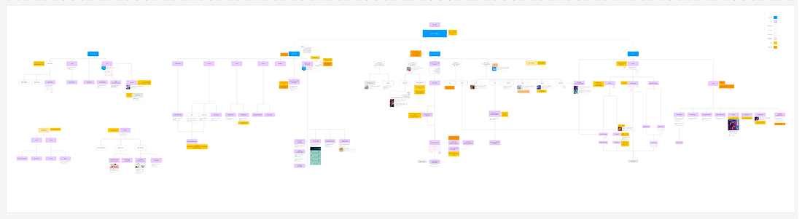
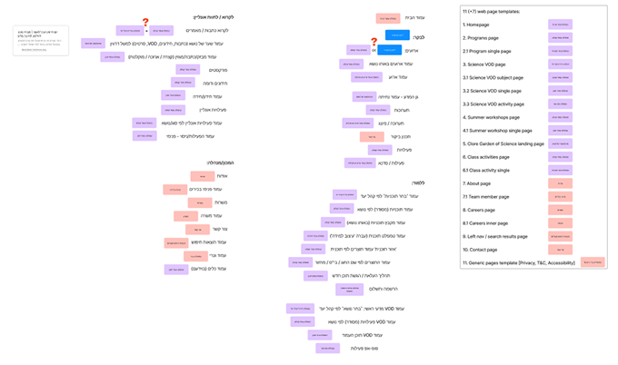

I led the Davidson Institute discovery using our standard framework. It worked in simpler environments. For the organizational complexity we were dealing with here, it wasn't enough.
The Davidson Science Education Institute spans multiple verticals: news and media, education programs and digital platforms, and a physical interactive museum. Each vertical had distinct constraints, audiences, and success metrics.
Our default discovery framework focused primarily on immediate user and design questions. For a multi-vertical organization, this was too narrow. Without adapting discovery to the broader system, foundational decisions risked optimizing for one vertical at the expense of others.
Teams would later need one-off solutions to accommodate what hadn't been addressed, and strategic alignment across business units would erode over time. We would have risked making decisions that looked right for one platform but would break the others.
- Multiple senior stakeholders with different priorities
- No single "primary platform" to optimize for
- Need to move forward without slowing momentum or overcomplicating discovery

Stakeholder map expanded to 13 participants across four verticals for cross-platform discovery.
I redesigned the discovery approach to match the organization's complexity. I expanded the stakeholder map to 13 stakeholders across business, product, platform, and content verticals, and reframed discovery questions to surface cross-platform implications early.
The shift was from validating isolated use cases to testing whether decisions could hold across multiple contexts. This allowed us to ground design decisions in shared business logic rather than platform-specific assumptions.

Discovery templates adapted to surface cross-platform implications and competing priorities early.
The adapted framework created a structure that the organization could actually participate in, rather than one imposed on them.
Stakeholders across verticals engaged with the discovery process more actively once the approach acknowledged their different contexts and constraints. Competing priorities surfaced earlier, in a space designed for alignment rather than in the middle of delivery.
The most important outcome was a shared understanding of scope and complexity before work began. Fewer late-stage surprises, and a clearer basis for prioritization decisions. Davidson became a long-term client. We've been working together since September 2022, continuing to evolve their digital products and platforms.
What Davidson changed for me: I no longer treat any discovery framework as the default. Before starting discovery on a new project, I now run a kick-off phase with a structured questionnaire to understand the client's organizational complexity: the number of teams, stakeholders, and competing priorities. Most of the time the standard approach holds. When it won't, I'd rather know at the start. The process adapts. The strategic intent doesn't.